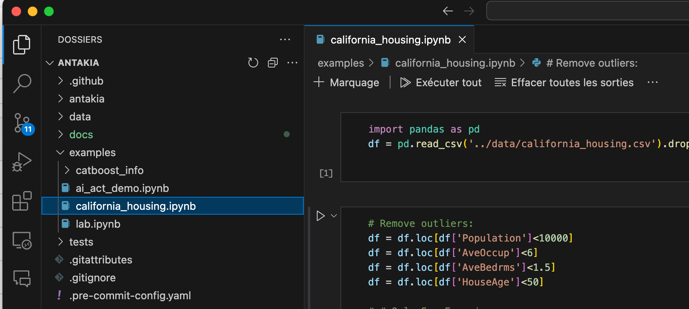
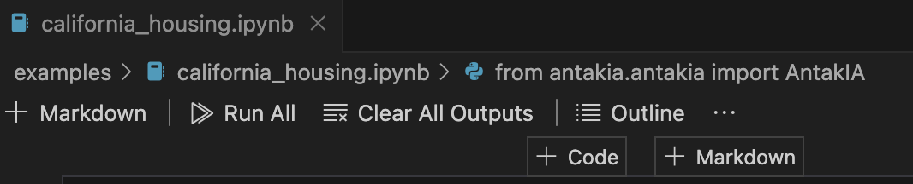

Installation
Install fron PyPi (recommended)
pip install antakia
Install from source
Clone our repo :
git clone https://github.com/AI-vidence/antakia.git
cd antakia
If you use poetry:
poetry shell
poetry install
If you prefer pip :
python3.10 -m venv . # or >3.10
source bin/activate
pip install -e .
Starting with example notebooks
AntakIA is designed to work within notebooks (Jupyter or Google Collab for example) Then you'll need a notebook to work with AntaakIA.
If you cloned our repo you'll find in the~/examples/ folder some sample notebooks (.ipynb files). Otherwise, you can download them manually from our Github page.
If you're note used with notebooks, here are common ways to run them * locally : * right from Visual Studio Code * on a local Jupyter server * on an online service hosting a notebook server : Google collab, a Jupyter hub (for many user) install in your university or company
Running notebooks in Visual Studio Code
Open the notebook file (ending with the ipynb extension) in the file explorer on the left:

At the top right corner of the VScode windows, choose the Python kernel you wan't to use.

Select your normal Python interpretor if you installed antakia through pip install.
If you downloaded the code and have installed it by yoursel, make sure you chose the virtual environment you set up.
Then you can run the nootebok with these buttons :

Running notebooks in a local Jupyter server
Go in your working directory where you have your data and notebooks.
cd <your_directory>
pip install notebook
Then launch the server with :
jupyter notebook